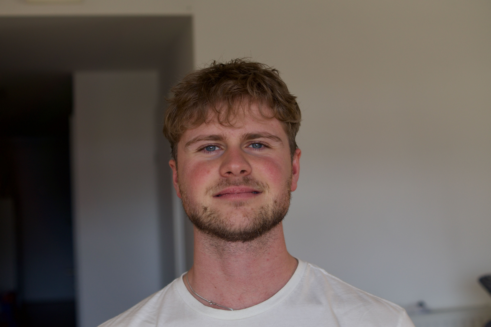

hello, i'm cedric, a computer science student from Innsbruck, Austria. currently i'm working on my bachelor thesis, where i analyze representational alignment in encoder-only transformers.
i like reading (check out my goodreads), sports (hiking and cycling) as well as ml/dl.
you can checkout the following links if you want to learn more about me: